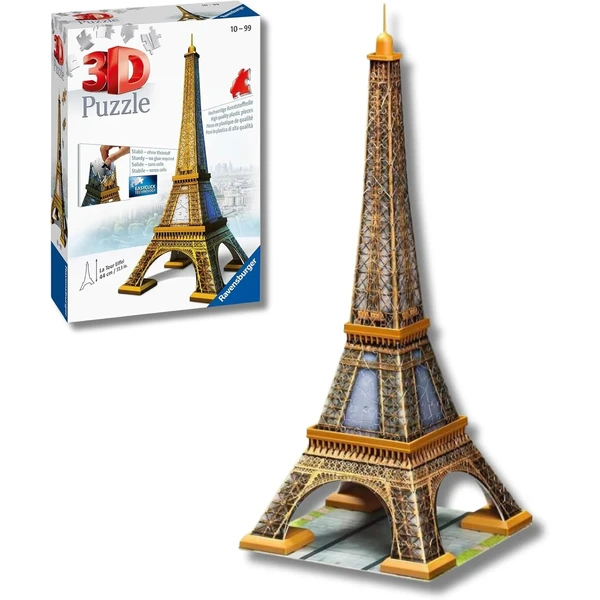

✨ Guía especial
Puzzle 3D de la Torre Eiffel: modelos, marcas y versión con luz LED
Qué incluye la maqueta y qué marca elegir
Qué incluye la maqueta y qué marca elegir
La Torre Eiffel es, con diferencia, el monumento más popular dentro de toda la categoría de puzzles 3D y una de las categorías con más variedad de modelos disponibles, solo por detrás de los modelos de madera. En esta guía repasamos qué incluye la maqueta, la versión con luz LED, qué marca elegir entre las tres principales del mercado, y dónde comprarla al mejor precio.
La maqueta reproduce la estructura de la torre con distintos niveles de detalle según el tamaño y el número de piezas de cada versión: desde modelos compactos de sobremesa hasta réplicas de gran formato pensadas como pieza decorativa. Al ser una estructura vertical y esbelta, a diferencia de los monumentos más horizontales como un estadio, conviene fijarse bien en la altura final antes de comprar si tienes pensado un lugar concreto donde exponerla.

Torre Eiffel Ver en Amazon →Igual que ocurre con otros monumentos y estadios, la Torre Eiffel también tiene versión con luz LED integrada — de hecho, es uno de los modelos donde el efecto luce especialmente bien por la altura y forma vertical de la estructura, ya que la iluminación recorre toda la torre de arriba a abajo en vez de concentrarse en una sola zona. No todas las marcas ni todas las tiendas la tienen disponible de forma constante, así que conviene revisarlo en la ficha de producto antes de comprar, ya que el precio sube frente a la versión estándar.
 Torre Eiffel Led
Ver en Amazon →
Torre Eiffel Led
Ver en Amazon →
La Torre Eiffel es de los pocos modelos donde compiten de forma directa tres marcas distintas, así que la elección merece un poco más de detalle que en otros artículos.
CubicFun es la especializada en monumentos y edificios: su versión de la Torre Eiffel es de las más vendidas del catálogo, con buena relación calidad-precio y varias opciones de tamaño.
Ravensburger ofrece el acabado más premium, con mayor precisión de pieza, aunque a un precio más elevado que CubicFun — la opción más segura si priorizas calidad sobre precio.
Clementoni aparece como tercera opción, con menos presencia propia; suele posicionarse como alternativa de gama media entre las otras dos.
A diferencia de otros artículos de la categoría, aquí sí merece la pena repasar las cuatro tiendas donde tiene presencia propia, ya que cada una tiene su papel.
Amazon es la opción con más variedad de marcas y versiones disponibles de forma constante, incluida la Night Edition con luz LED.
Carrefour, Juguettos y Lidl también tienen el producto disponible, aunque con menos variedad de marcas y sujeto a campaña — Lidl en particular suele tenerlo en ofertas puntuales de temporada, no de forma constante todo el año.
Es de los modelos donde el efecto luce especialmente bien, ya que la iluminación recorre toda la estructura vertical. Sube el precio frente a la versión estándar, así que depende de si buscas un extra decorativo o el modelo más económico.
CubicFun ofrece buena relación calidad-precio y es la más vendida del catálogo. Ravensburger tiene mayor precisión de pieza, pero a un precio más elevado — la elección depende de si priorizas precio o acabado premium.
Varía bastante según la versión — desde modelos compactos de sobremesa hasta réplicas grandes. Conviene revisar la altura final en la ficha de producto si tienes pensado un lugar concreto para exponerla.
Amazon tiene la mayor variedad de forma constante. Carrefour, Juguettos y Lidl también lo tienen disponible, aunque sujeto a campaña — Lidl especialmente en ofertas puntuales de temporada.
Todos los tipos, materiales, marcas y modelos según la edad.